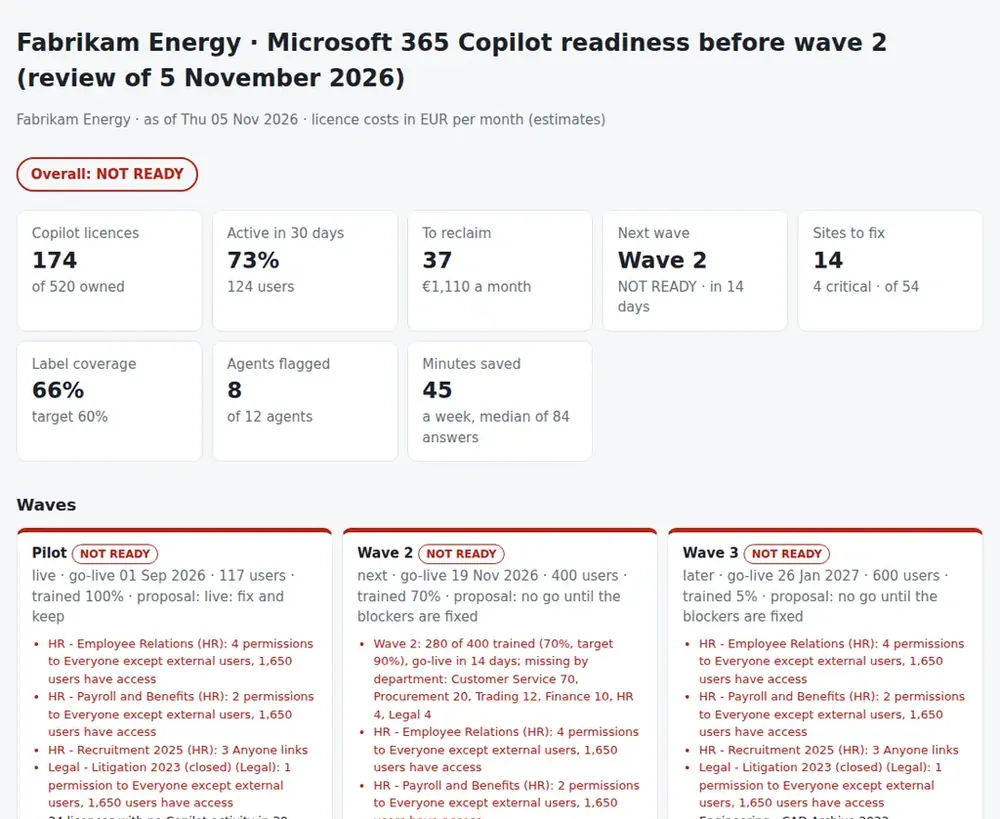

Two weeks before a Copilot wave of 400 people, the HR employee relations site has been shared with Everyone except external users since a migration, and 1,650 people could get its content back in an answer. That is what the Microsoft 365 Copilot readiness review published with this post finds. It is a tool that runs on demo data from a made-up energy company with 1,800 people in three waves, reviewed on 5 November, two weeks before the second wave, with the problems placed on purpose. Its verdict: four critical sites, and no wave ready until they are fixed.
Copilot answers from everything a person can already open. It does not create new access, but it makes old oversharing easy to find, so a rollout that went well in the pilot can go wrong in the next wave for reasons no single console shows. The tool says which waves every issue reaches: the waves with people in its department, or every wave when it is critical oversharing or an agent open to the whole company. A wave is not ready when a critical issue reaches it.
A recruitment site with open links and a litigation site with no owner
The HR site is not alone. The recruitment site has Anyone links, which open without signing in, and no label. A closed litigation site has no owner and is still searchable. The review checks SharePoint sites shared with Everyone except external users or with Anyone links, sites with no owner or only one, sites without a sensitivity label and inactive sites Copilot can still search. While they are fixed, it proposes Restricted Content Discovery, a setting that keeps a site out of Copilot answers; it buys time but changes no permission.
A quarter of Finance's files carry a sensitivity label, the tag that marks how confidential a document is, and the DLP policy for Copilot, the rule meant to stop sensitive data leaving, is still in simulation.
An agent built by someone who has left, reading from an unapproved Dropbox
An agent published to the whole company was built by someone who has left and reads from a Dropbox connector nobody approved. An HR agent helps screen candidates and is not in the AI register. The tool flags agents with no owner, published to everyone, using connectors not on the allowed list or unused, and agents that support decisions about people with no entry in the register. That column is a record, not a legal assessment.
Thirty-seven licences to reclaim and a wave 70% trained
Thirty-four licences have not been used in a month, while the next wave is 14 licences short. In all, the review finds 37 licences to reclaim, worth 1,110 euros a month at the price set in the settings, and checks whether the pool covers the next wave once they are back. The wave itself is 70% trained, with 14 people not registered for MFA and 31 without a compliant device. For every wave the tool checks training, MFA, a compliant device, a licence and a champion in each department, and it tracks adoption by department and app with its trend and the survey.
How to use it with real data
The usage data is the Microsoft Graph Copilot report per user, the site data comes from Get-SPOSite and the SharePoint data access governance report, and the agents come from the Power Platform inventory. The repository includes a read-only PowerShell exporter for Microsoft Graph and SharePoint Online, and runs on Python with only the standard library. It produces a verdict per wave (ready, attention or not ready), a web report, a pack for the Copilot steering group with a decision column per wave, and CSV files for licences, oversharing, agents, adoption, waves and actions. It comes with 14 tests and a runbook with the steering group agenda, go or no go per wave and the ADKAR steps. It is not the tenant governance review published earlier, which looks at admin roles and Conditional Access: it is the review before each wave and every month after. The energy company is fictional.
Where it comes from
The tool comes from deploying Microsoft 365 Copilot and driving its adoption, administering Copilot Studio agents, being Global Administrator of Microsoft 365, working with Purview, DLP and sensitivity labels, and change management with Prosci, ADKAR and Kotter. The lesson I keep: the permissions have to be fixed before the wave, not after.
Want to bring it to your environment or adapt it to your case? Get in touch and we can look at it together.
Tech Career Lab · newsletter
Found this useful? Every two weeks I send one practical idea for IT professionals: LinkedIn, projects, networking and hiring processes.
Sign up and get the 33 ideas →